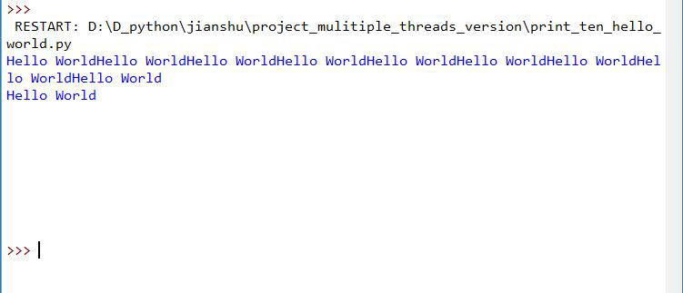

0.3122018.07.20 16:47:22字数 1911阅读 927
在上上篇我们编写了一个简单的程序框架来爬取简书的文章信息，10分钟左右爬取了 1万 5千条数据。
现在，让我们先来做一个简单的算术题：
假设简书有活跃用户一千万人（不知道简书有多少活跃用户，我只能往小了算）
平均每人写了 15篇文章，那么一共有一亿五千万篇文章
我们10分钟爬取了 1万 5千篇，凑个整算 2万
那么爬取一亿五千万条数据需要
150000000 / 20000 = 10 * 7500 = 75000 min = 1250 h = 52 d
w(ﾟДﾟ)w 52天！！！，如果按照前面的脚本来爬要爬整整 52天，那时候黄花菜都凉了呀。
这些数据的时间跨度如此大，如果要做数据分析的进行对比的话就会产生较大的误差。
所以，我们必须得提高爬取速度！！！
这时候就轮到今天得主角登场了，
噔 噔 噔 蹬------》多线程
简单来讲，多线程就相当于你原来开一个窗口爬取，现在开了10个窗口来爬取。
不计较数据的重复的话，现在的速度应该是之前的10倍，也就是说原来要52天才能爬完的数据现在只要5.2天了。
不过多线程和上面的例子还是有一些区别的
多线程是在一个窗口里同时运行十个线程，而上面的例子是同时打开十个窗口。
如果将数据比作货物的话，原来一个线程就相当于一个人在搬，十个线程就相当于十个人在搬
threading是 python的标准库，可以直接导入使用
Thread类是 threading库的重点，我们使用要使用多线程都要通过这个类来使用
Thread一共有两种使用方法，第一种是直接传一个回调函数给 Thread类，这个回调函数可以有参数，但必须返回 None也就是不能有返回值。
第二种方法是继承 Thread类，然后重载 Thread类的 __init__()和 run()方法，第二种方法可以在实例初始化的时候向 run方法传递参数。
这两种方式可以互换，但是推荐使用第二种方法，因为这样更利于代码的组织，代码的可读性也更强。
下面我们就用代码来演示一下，Thread类的使用方法：
第一种：
Thread的原型是：
threading.Thread(group=None, target=None, name=None, args=(), kwargs={})
这里 group必须是 None，将回调函数传给 target，name是线程的名字默认是 ‘Thread-N’ N是一个数字。
args是要传递给回调函数的位置参数，kwargs是传递给回调函数的关键词参数。
第一种使用方法如下：
先定义一个函数，然后将函数和它所需的参数作为 Thread类的初始化参数得到一个 Thread实例，这个实例就是一个未开始的线程。
要启动这个线程，只需调用 start() 方法，然后调用 join()方法阻塞主线程。
为什么要调用 join()方法呢？
因为我们实例化的线程和主线程（也就是我们代码所在的线程）是分开的，那就有一个完成先后的问题。
如果我们实例化的线程先完成，那问题不大，但是要是主线程先完成了，那么正在运行的其他子线程会全部强行被停止
所以调用 join()方法阻塞主线程来保证所有的子线程全部完成，下面看代码示例：
在这个示例中我们用十个线程来访问我的首页 100次，并用 time库测试所用时间。
#-*- coding: utf-8 -*
import threading
import requests
import time
# 定义回调函数
def getPage(url):
headers = {
'User-Agent': 'Mozilla/5.0 (Windows NT 10.0; WOW64) AppleWebKit/537.36 (KHTML, like Gecko) Chrome/66.0.3359.117 Safari/537.36'
}
for i in range(10):
r = requests.get(url, headers=headers)
print(r)
url = 'https://www.jianshu.com/u/472a595d244c'
# 用来存放线程的列表
threads = []
# 记录开始时间
start = time.time()
# 添加十个线程到线程列表中
for i in range(10):
# 向线程列表传递参数，通过 kwargs向回调函数传递参数
t = threading.Thread(target=getPage, name=f'Thread {i}', kwargs={'url':url})
# 通过 args向回调函数传递参数, 注意 url后的逗号，
# args必须是一个元组
# t = threading.Thread(target=getPage, name=f'Thread {i}', args=(url,))
threads.append(t)
# 开启所有线程
for t in threads:
t.start()
# 阻塞主线程，直到所有线程全部完成
for t in threads:
t.join()
# 记录结束时间
end = time.time()
print(f'多线程共用时 {end - start} 秒')
十个线程访问一百次大概是 8.13秒
用普通的方法访问一百次的话，大概需要 60秒
前者平均每次访问耗时 0.08秒，而后者平均每次访问耗时 0.6秒，多线程差不多是普通方法的 8倍
第二种：
在使用之前我们得先定义一个 Thread类的子类：
# 定义一个子类并重载 __init__()方法和 run()方法
class testThread(threading.Thread):
def __init__(self, thread_name):
# 初始化时调用基类的初始化函数 初始化基类
threading.Thread.__init__(self)
# 将参数赋值作为 self的属性 这样就可以将参数通过 self传递给 run方法
self.thread_name = thread_name
# 要在多线程里运行的函数
def run(self):
url = 'https://www.jianshu.com/u/472a595d244c'
headers = {
'User-Agent': 'Mozilla/5.0 (Windows NT 10.0; WOW64) AppleWebKit/537.36 (KHTML, like Gecko) Chrome/66.0.3359.117 Safari/537.36'
}
for i in range(10):
r = requests.get(url, headers=headers)
print(r, ' '+self.thread_name)
后面的使用方法就和第一种方法差不多了，只是传递的参数发生了一点变化：
# 主页链接
url = 'https://www.jianshu.com/u/472a595d244c'
# 用来存放线程的列表
threads = []
# 记录开始时间
start = time.time()
# 添加十个线程到线程列表中
for i in range(10):
# 像使用普通类一样
t = testThread(url)
threads.append(t)
# 开启所有线程
for t in threads:
t.start()
# 阻塞主线程，直到所有线程全部完成
for t in threads:
t.join()
# 记录结束时间
end = time.time()
print(f'多线程共用时 {end - start} 秒')
这两种方法运行时间没有太大差别，但是第二种方可读性更强，所以推荐大家尽量使用第二种方法
凡事都有两面性，虽然使用多线程速度更快，但是多线程也会带来一些问题，我们来看下面这个例子：
定义一个函数，这个函数会在控制台中打印 Hello World一次
现在我们用十个进程来同时执行它，看看输出的结果：
#-*- coding: utf-8 -*
import threading
def print_hello_world():
print('Hello World')
threads = []
for i in range(10):
t = threading.Thread(target=print_hello_world)
threads.append(t)
for t in threads:
t.start()
for t in threads:
t.join()
现在 pycharm里运行一遍，和正常情况一样，每一句 hello world单独占一行，没什么问题。
但是，现在我们用 idel再运行一遍这段代码，你会发现：

原本应该分成十行输出的 hello world现在变成了一行
更加糟糕的是 hello world竟然变成了 world hello (＃°Д°)
为什么会这样呢？
这是因为 pycharm的控制台是线程安全的，而 idel则没有做线程保护
所以当多个线程同时访问 idel的控制台时，就会出现争抢的现象
比如前一个线程刚打印完 hello，这时后面的线程就根本不管前面地线程还没打印完，直接上去就开始打印
这时就会出现单词顺序不对的问题，就像上面的例子一样
那什么时候会出现这样的问题呢？
其实问题的根源是多个线程同时访问了同一个对象，造成争抢，然后就会出问题
比如多个线程同时操作一个文件、变量、列表等等
为了防止这样的问题产生，我们会给每一个可能被多个线程访问的资源加一个资源锁，这样同时就只能有一个线程访问了。
不过这样速度就会变慢一些，而且整体速度与资源锁的数量成反比。
所以要适当的使用资源锁，不要滥用，不然速度会变得很慢。
这里的资源锁指的就是 threading.Lock() ，它的一个实例就是一个资源锁对象
使用方法如下：
lock.acquire()
print('Hello World')
lock.release()
lock.acquire()申请上锁，lock.release() 解锁，在两者之间的代码就是线程安全的
现在，我们已经能够简单地使用多线程了
那么，下一篇我们就把 v1.0 版的简书爬虫升级到 v2.0版的多线程版简书爬虫。
最后，觉得不错的话，记得关注、点赞、评论哦(❤ ω ❤)